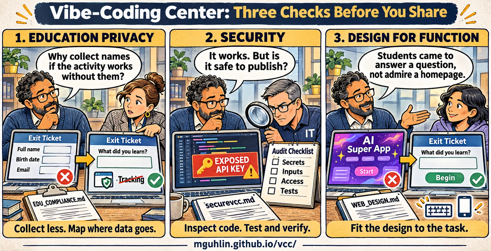

Vibe-Coding Center / Field guide
Before you share with a class
Try the classroom journey with invented data, organize your review, and keep a record of the evidence.
These reminders help organize your review. Ticking a box is not evidence that a site is safe or approved.
Three checks before you share

Open full-size Three Essential Checks cartoon · Download original Three Essential Checks PNG

The cartoon in text
- Education privacy: “Why collect names if the activity works without them?” An exit ticket asking for a full name, birth date, and email becomes a simpler learning question. Collect less and map where data goes. Use
EDU_COMPLIANCE.md. - Security: “It works. But is it safe to publish?” An educator and an IT colleague investigate an exposed API key and review secrets, inputs, access, and tests. Inspect code, test, and verify with
securevcc.md. - Design for function: “Students came to answer a question, not admire a homepage.” A distracting AI-themed start screen becomes a clear exit-ticket activity. Fit the design to the task with
WEB_DESIGN.md.
Try the classroom journey
0 of 6 reminders marked. Use the full guides to gather release evidence.
Selections stay in this page's memory and reset when you reload. Nothing is saved or submitted by these reminders.
Keep the evidence
Use the launch review template to record what passed, what failed, which checks were not run, and who must resolve school or vendor decisions. Read the launch review guide for the complete record.
Keep the full web design, security, and education privacy instructions nearby. They explain the checks behind these reminders.